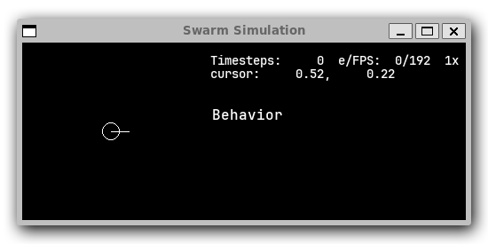
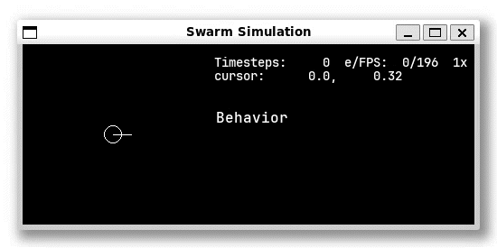
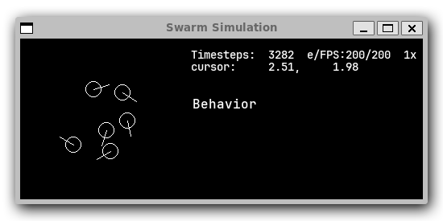
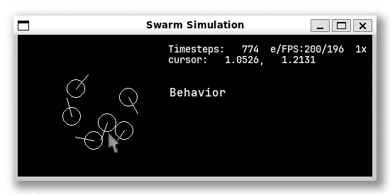
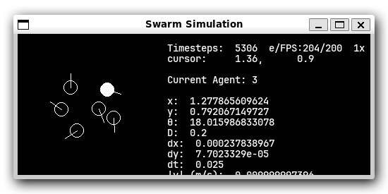
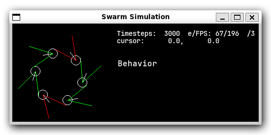

Basic Usage#
For your first run after installing RobotSwarmSimulator, let’s walk through some simple examples.
Your first simulation#
Let’s start with a simple simulation.
We’ll use the RectangularWorld class to create a world with a single agent.
Hint
Remember to activate the virtual environment so that you can import novel_swarms!
Open a Python shell with python, and make sure you can import novel_swarms with no errors.
python#Python 3.11.0 (or newer)
Type "help", "copyright", "credits" or "license" for more information.
>>> import novel_swarms
>>>
Creating a world#
First, let’s create a world. To do that, we first need to create a
RectangularWorldConfig object.
Then, we can create the world by passing the config to the
RectangularWorld class.
from novel_swarms.world.RectangularWorld import RectangularWorld, RectangularWorldConfig
world_config = RectangularWorldConfig(size=[10, 10], time_step=1 / 40)
world = RectangularWorld(world_config)
Creating an agent#
We now have a world that we can add things to. Let’s add an agent to it!
Let’s create the MazeAgentConfig
and use it to initialize the MazeAgent class.
from novel_swarms.agent.MazeAgent import MazeAgent, MazeAgentConfig
agent_config = MazeAgentConfig(pos=(5, 5), agent_radius=0.1)
agent = MazeAgent(agent_config, world)
world.population.append(agent) # add the agent to the world
Notice how we passed the world to the agent. This is so that the agent
has a reference to the world, allowing it to access the world’s properties.
Starting the simulation#
Now that we have something to look at, let’s start the simulation!
from novel_swarms.world.simulate import main as sim
sim(world)
You should see a window pop up with a single agent in the center of the world.
{kind=link}

A simulation with a single agent.#
But it’s not doing anything yet. Let’s make it move. Stop the simulation by sending Ctrl+C to the terminal.
Adding a controller#
Let’s add a controller to the agent. Controllers make the agent move.
We’ll use the StaticController class,
which sends the same movement signals to the agent every step.
MazeAgent takes two movement signals:
A forwards speed, in in units per second.
A turning speed, in radians per second.
from novel_swarms.agent.control.StaticController import StaticController
controller = StaticController(output=[0.01, 0.1]) # 10 cm/s forwards, 0.1 rad/s clockwise.
agent.controller = controller
sim(world)
Now the agent should move forwards and turn slowly.
{kind=link}

Now the agent goes round in circles.#
Spawners#
But why settle for just one agent? Let’s try spawning a bunch of agents.
First, we need to create a PointAgentSpawner.
from novel_swarms.world.spawners.AgentSpawner import PointAgentSpawner
spawner = PointAgentSpawner(world, n=6, facing="away", avoid_overlap=True, agent=agent, oneshot=True)
world.spawners.append(spawner)
Now, remove the existing agent from the population and run the simulation again.
The spawner will create copies of the agent and controller and add the copies to the world’s population.
The agents will spawn in the same location, but get pushed apart as they spawn.
del world.population[-1] # remove the most recently added agent
sim(world)
Because of the oneshot=True argument, the spawner will spawn all its agents once,
and then delete itself.
Congrats! You’ve created your first simulation!
To stop the simulation, press Ctrl+C in the Python shell,
and type quit() or exit() to exit Python (or press Ctrl+D or Ctrl+Z).
All together now!#
{kind=link}

Let’s recap what we’ve done so far:
We created a world with a single agent.
We added a controller to the agent.
We spawned a bunch of agents.
We ran the simulation.
Here’s all of the code in one file:
my_first_simulation.py#from novel_swarms.world.RectangularWorld import RectangularWorld, RectangularWorldConfig
from novel_swarms.agent.control.StaticController import StaticController
from novel_swarms.world.spawners.AgentSpawner import PointAgentSpawner
from novel_swarms.agent.MazeAgent import MazeAgent, MazeAgentConfig
from novel_swarms.world.simulate import main as sim
world_config = RectangularWorldConfig(size=(10, 10), time_step=1 / 40)
world = RectangularWorld(world_config)
controller = StaticController(output=[0.01, 0])
agent = MazeAgent(MazeAgentConfig(position=(5, 5), agent_radius=0.1,
controller=controller), world)
spawner = PointAgentSpawner(world, n=6, facing="away", avoid_overlap=True,
agent=agent, oneshot=True)
world.spawners.append(spawner)
sim(world)
Simulator Features#
Let’s have a look at some of the features of the simulator.
First, let’s start the simulation again, but in a paused state.
sim(world, start_paused=True)
Click on the simulation to focus the window. If you tap L or the ▷ right arrow key, the simulation will perform a single step .
You can pause or unpause the simulation by pressing Space.
⇧LShift and ⇧RShift will slow down or speed up the simulation.
The speed multiplier is shown in the top left corner of the window. Values beginning with a / slash
are divisors, i.e. /2 half or /4 quarter speed. The number of elapsed time steps is also shown.
The number in between the timesteps and multiplier is the step rate and framerate, respectively, in frames per second.
You can also see the world coordinates under your cursor displayed in this area.
Clicking and dragging the MMB inside the simulation window will allow you to pan the simulation, and scrolling up or down will zoom in or zoom out.
You can reset the viewport and zoom level with the Num0 Numpad 0 key if you get lost .
{kind=link}

You can pan the simulation with the middle mouse button, and zoom with the scroll wheel.#
{kind=link}

Clicking on an agent will select it. This will show some information about the agent on the right side of the window. You can de-select by clicking on the blank background.
The time-related functions are handled by the simulate.main() function, while panning, zooming, and other
event-handling is done inside the World class.
Sensors & Controllers#
Earlier, we saw how to add a static controller to an agent. Static controllers, as you saw, cause the agent to move with a constant speed and turn at a constant rate. But “Agent” implies that they can make decisions and control their actions in response to changes in their environment.
So let’s add sensors to our agents, and connect those sensors to the agents’ controllers.
For this example, we’ll use a binary field of view (FOV) sensor. This sensor will detect the presence of other agents in its field of view, a triangular region of space that projects from the agent’s front. (Actually, it’s a sector of a circle, but we’ll gloss over that).
Assuming you’re starting from the first example code, let’s add a sensor to your existing agent like this:
from novel_swarms.sensors.BinaryFOVSensor import BinaryFOVSensor
sensor = BinaryFOVSensor(agent, theta=0.45, distance=2,)
agent.sensors.append(sensor)
The theta parameter is half the angle of the FOV in radians, and the
distance parameter is the detection range. As with controllers, you should also
pass a back-reference to the agent as the first argument.
Hint
If you downloaded the my_first_simulation.py file,
you can either open a new Python REPL with python and paste the code, or run
the file with the -i option: python -i my_first_simulation.py. The -i
stants for “interactive” and will return control to you after running the file.
The sim() function starts the sim, so don’t forget to stop the simulation with Ctrl+C!
Now let’s create a controller that will read the sensor data and change how the robot moves:
from novel_swarms.agent.control.BinaryController import BinaryController
controller = BinaryController(agent, (0.02, -0.5), (0.02, 0.5))
agent.controller = controller
Now, if you run sim(world), you should see some agents that turn left if one sees something and right if one doesn’t!
If not, try re-adding the spawner to the world’s spawners list:
del world.population[:] # Delete all agents
spawner.mark_for_deletion = False # Re-enable the spawner
world.spawners.append(spawner)
Why did that work?
Depending on exactly how you set things up before this section, there’s a chance nothing happened.
Or, you might be wondering why you didn’t need to re-define a new Spawner() instance to
get the new agent.
There’s a couple things going on here.
1. The Spawner() has the oneshot=True argument, which will set its spawner.mark_for_deletion
flag to True after the first simulation step, otherwise it would create new agents
on every step() (bad). This doesn’t mean the spawner deletes itself,
but the world will simply remove it from its spawners list.
So, you don’t need to re-define the spawner, you already created it before and can just
un-mark it for deletion and add it back to the spawners list.
2. Our AgentSpawner stores either a config
for the agent parameters, or in this example, a reference to the actual agent itself.
In the case of the latter, the spawner will attempt to make a deepcopy()
of the agent we gave it earlier. Because agent is a reference to the agent
we created earlier, and because we modified the same reference to agent by setting
agent.controller = controller, you’re modifying the same agent object that
the spawner has. If you create a new agent instance and assign it with agent = Agent(...),
the spawner will not have access to it automatically.
Exercise
One way to understand this would be to try adding your agent to the world.population
multiple times.
world.population.append(agent)
world.population.append(agent)
world.population.append(agent)
You won’t see three new agents, just one. This is because you didn’t create copies of agent,
the world just has three extra references to the same agent in the population list.
This means that we’re calling agent.step() three times as often now, but it’s still only
the same actual agent.
Hint
If the above still didn’t work, dry exit()-ing your Python shell and starting
from scratch:
milling.py#from novel_swarms.world.RectangularWorld import RectangularWorld, RectangularWorldConfig
from novel_swarms.agent.control.BinaryController import BinaryController
from novel_swarms.world.spawners.AgentSpawner import PointAgentSpawner
from novel_swarms.agent.MazeAgent import MazeAgent, MazeAgentConfig
from novel_swarms.sensors.BinaryFOVSensor import BinaryFOVSensor
from novel_swarms.world.simulate import main as sim
world_config = RectangularWorldConfig(size=(10, 10), time_step=1 / 40)
world = RectangularWorld(world_config)
agent = MazeAgent(MazeAgentConfig(position=(5, 5), agent_radius=0.1), world)
sensor = BinaryFOVSensor(agent, theta=0.45, distance=2,)
agent.sensors.append(sensor)
controller = BinaryController(agent, (0.02, -0.5), (0.02, 0.5))
agent.controller = controller
spawner = PointAgentSpawner(world, n=6, facing="away", avoid_overlap=True,
agent=agent, oneshot=True)
world.spawners.append(spawner)
sim(world)
History#

This circular formation is an example of milling!
In 2014, a group of researchers discovered that a simple rule could be used to create this milling formation [1].
You can even mill with a group of humans! The rule is simple:
If you see someone, turn left.
If you don’t see anyone, turn right.
However, the speed is important to get right. In fact, if you adjust the speed and how quickly you turn, you can create a variety of different behaviors, not just milling.
This is actually why RobotSwarmSimulator was created. We needed a way to test what swarm behaviors result from different speeds and turning rates.
We’ve used it to automatically discover interesting behaviors [2] [3], train Spiking Neural Networks [4], and even train real robots [5]!
Note
That’s also why the package is called novel_swarms.
YAML Configuration#
So far, we’ve only been configuring our world and agents using Python code.
This has benefits, but it’s not the only way to configure RobotSwarmSimulator. You can also use a YAML file to configure your world and agents.
Let’s start by replicating the previous example, but this time we’ll use a YAML file.
First, let’s create a new file called world.yaml and add the following:
world.yaml# type: "RectangularWorld"
size: [10, 10]
time_step: !np 1 / 40
spawners:
- type: "PointAgentSpawner"
n: 6
facing: "away"
avoid_overlap: true
oneshot: true
agent:
type: "MazeAgent"
position: [5, 5]
agent_radius: 0.1
sensors:
- type: "BinaryFOVSensor"
theta: 0.45
distance: 2
controller:
type: "BinaryController"
a: [0.02, -0.5]
b: [0.02, 0.5]
Then, let’s create a python file or open a new Python shell and run the following:
run.py#from novel_swarms.world.RectangularWorld import RectangularWorld
from novel_swarms.world.simulate import main as sim
world_config = RectangularWorldConfig.from_yaml('world.yaml')
sim(world_config)
Hint
You can run the file with python run.py or python -i run.py.
Make sure your world.yaml file is in the same directory as run.py.
You should see the same milling formation as before.
What just happened?#
worlds and agents use Config classes,
but to see configuration options for sensors, controllers, and spawners, the arguments are simply
passed as a dict to the constructors.
The world.yaml file is a YAML file that describes the world, and RectangularWorldConfig.from_yaml()
loads it as a dict and turns it into a RectangularWorldConfig.
Just as dicts can contain nested dicts, Configs can contain other configs, so the spawners: sequence
becomes a list of dictionaries, which are then turned into AgentSpawners.
We cover the order that things are initialized in Initialization Order.
Exercise
Try changing the parameters in the world.yaml file and see what happens.
You can also try adding a single agent to the world.population list
adding the agents: `` sequence to the ``world.yaml file.
If you’ve never used YAML before, check out Learn YAML in Y minutes
What can I change?#
If you tried the exercise above, you might be wondering what the parameters are called and what they do. This information can be gleaned from the API Reference.
For example, the options for configuring RectangularWorld are the parameters
for the RectangularWorldConfig class, which
also inherits options and defaults from the AbstractWorldConfig class.
Similarly, the options for configuring MazeAgent are the parameters
for the MazeAgentConfig class, and so on.
For objects that don’t use Config classes, such as sensors, controllers, and spawners,
remember that the arguments are simply passed as a dict to the constructors. So the
options are the parameters for the constructor. This is how you might set the controller
of an agent to a BinaryController:
Todo
new controller type tutorial
new sensor type tutorial
metrics tutorial
advanced yaml tutorial (np, include)
new agent type tutorial
world objects tutorial
add pictures and animated gifs
Citations